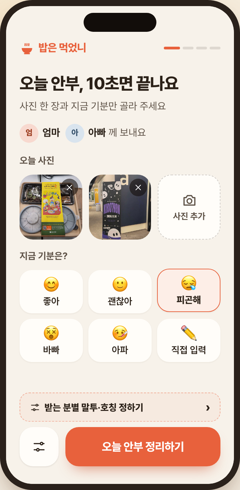
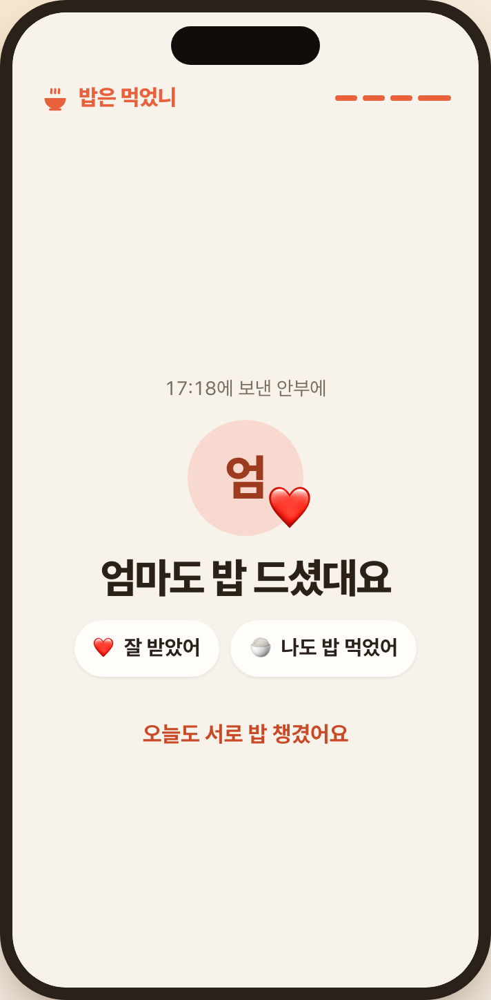
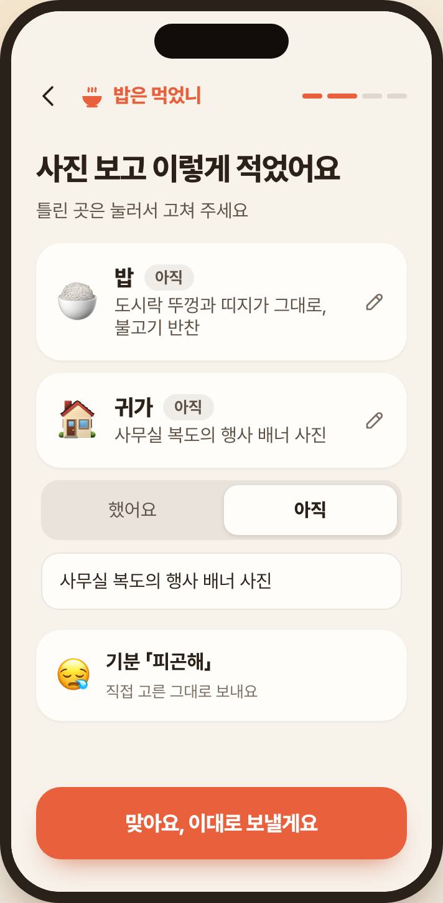
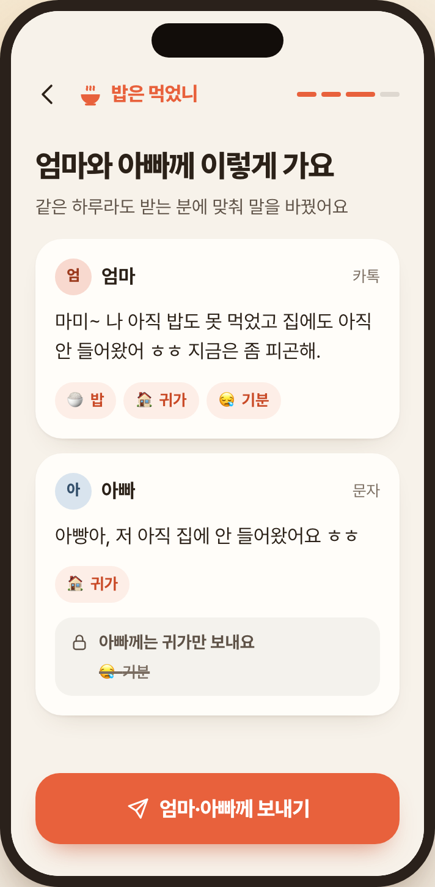
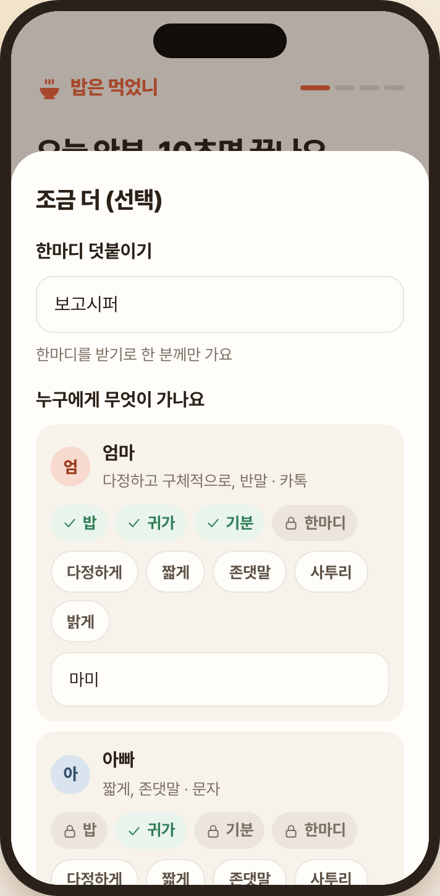
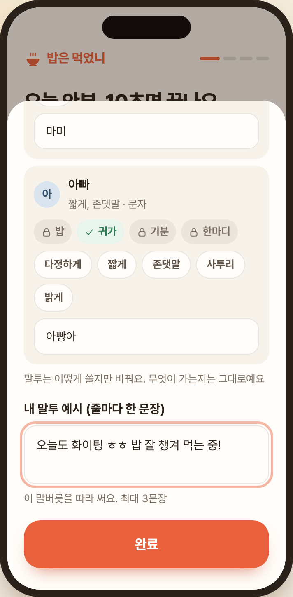
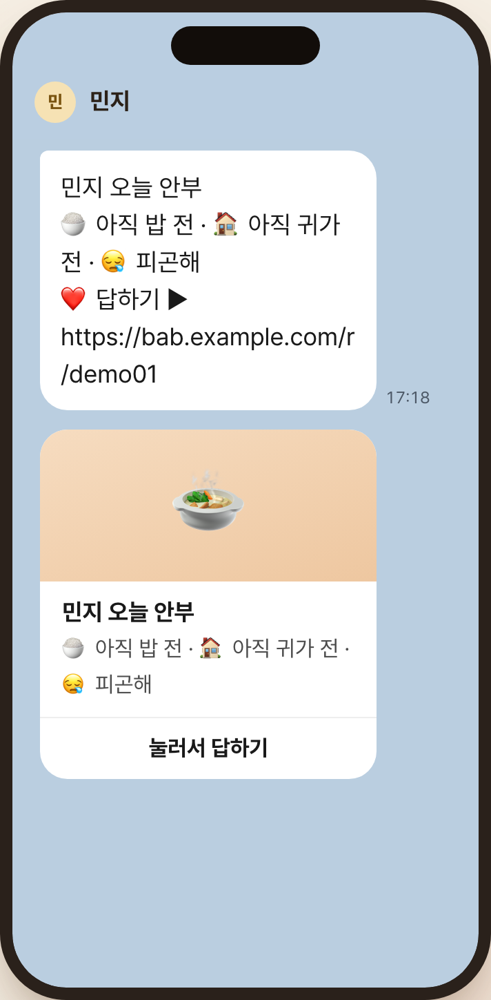
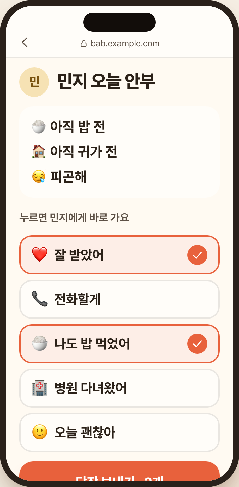

KIROTHON 2026 · AAcrew
사진 한 장이면, 엄마·아빠께 안부 끝


1매일 오는 질문
"밥 먹었고, 들어왔고, 좀 피곤해.
같은 말을 엄마한테, 또 아빠한테."
2문제
출처: 한국보건사회연구원 보건복지포럼 2024.11 (2023 노인실태조사) · 국가데이터처 「2025 통계로 보는 1인 가구」 · Journal of Marriage and Family 2016
33지금 방식이 안 되는 이유
엄마에게, 아빠에게 따로. 하루 두 번이면 일주일에 열네 번입니다.
지금: 카톡으로 직접 답하기엄마는 밥과 기분까지, 아빠는 들어왔는지만. 같은 내용을 보내면 누군가에겐 과합니다.
지금: 가족 단톡방위치 공유는 편하지만 자녀가 오래 쓰지 못합니다. 안부는 내가 보내야 안부입니다.
지금: 위치 공유 앱4통찰
밥·귀가·기분을 다정하게, 반말로
귀가만 짧게, 존댓말로
5해결 · 자녀 폰


6해결 · 나다운 말투


7해결 · 부모님 폰


8신뢰 설계
기분은 추측하지 않고, 자녀가 버튼으로 고른 그대로 씁니다.
요구사항 R2·R3 · 테스트로 확인받는 분 프로필에 없는 항목은 AI에게 넘기기 전에 코드가 뺍니다.
아빠 메시지에 기분 0건 · live 재확인AI가 적은 내용을 자녀가 고치거나 승인한 뒤에만 보냅니다.
요구사항 R2-2확인 뒤에도 '모르겠어요'인 항목은 누구에게도 전하지 않습니다.
live 버그에서 신설한 R4-59동작 방식
10Kiro로 만든 방식
팀 규칙 파일. 공통 4개는 항상, FE·BE는 폴더를 열 때만 로드
R1~R8 수락 기준. "아빠 입력에 mood 없음"까지 문장으로
L·BE·FE 라벨로 3명이 동시에. 선행 의존은 1개뿐
수락 기준을 그대로 옮긴 백엔드 64개 + 화면 31개
task 후 자동 리뷰, 영상·덱 생성 절차를 skill로
live에서 "밥이 아닌 사진도 '밥 잘 먹었어'"가 나오자, 코드보다 spec 수락 기준을 먼저 고쳤습니다 (R2-3 보강, R4-5 신설). 기준마다 테스트를 붙이고 review 에이전트로 다시 검증했습니다.
11사용자 가치와 다음 단계
안부가 없는 날만 "점심 사진 있어요?"라고 부드럽게 알립니다
부모님이 '병원 다녀왔어'를 며칠 누르면 "전화 한 통 어때요?"를 제안합니다
부모님도 사진 한 장으로. 안부가 양방향이 됩니다
12다음 고도화
지금 바로 써 보세요
AAcrew · github.com/youngmin1205/kirothon-team-022
14